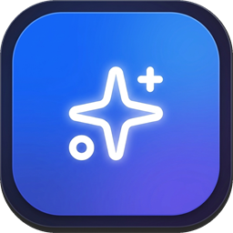
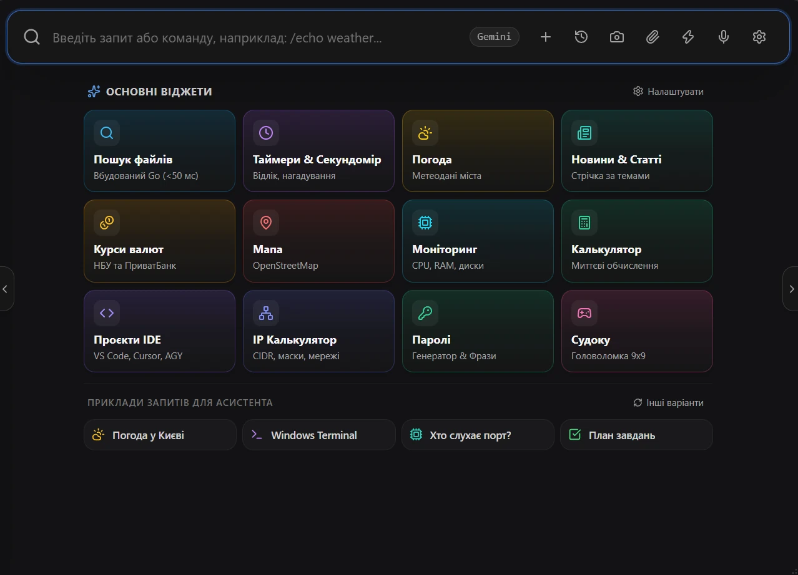
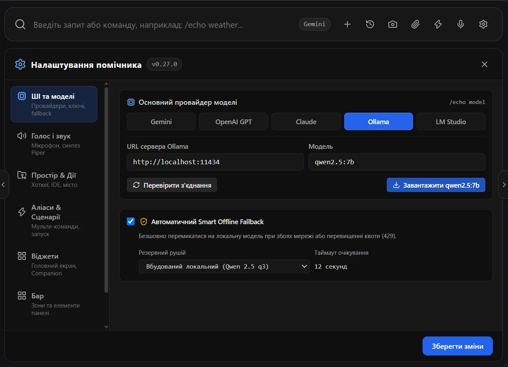

Голос і текст
Розпізнавання мовлення локально (Whisper), озвучення українським голосом (Piper). Або просто вводьте запити в рядок пошуку.

ЕхоАсистент для Windows
Голосовий і текстовий помічник на робочому столі: запускає програми, шукає файли, ставить таймери та виконує сценарії. Працює з хмарними та локальними мовними моделями.
Ctrl+Space — голос · Alt+Space — текст


Розпізнавання мовлення локально (Whisper), озвучення українським голосом (Piper). Або просто вводьте запити в рядок пошуку.
Модульна панель із налаштовуваною сіткою: пошук, закріплені програми, CPU/RAM, погода, таймер, музика та утиліти. Розташування змінюється перетягуванням.
Швидкі команди, таймери, пошук файлів і запуск проєктів в обраній IDE — з рядка або голосом.
OpenAI, Claude, Gemini, а також локальні Ollama та LM Studio — коли дані мають лишитися на вашому комп'ютері.
Дії виконуються лише з декларативного білого списку команд із підстановкою параметрів.
Інтерфейс, голос і документація — українською мовою.
Остання версія — на сторінці релізів. Потрібна Windows 10/11.
Остання версіяЖурнал змін — у нотатках кожного релізу.